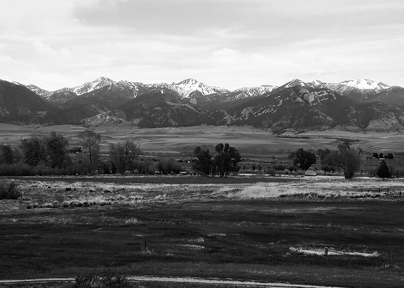

Cycle the Continental Divide
Our annual Continental Divide Cycling Event challenges a fixed course annually called the Great Divide Mountain Bike Route. Not only is the Great Divide Route a true classic, its 'primary track' is pursued with consistency by TD athletes so that year to year, finish times may always be compared directly to the record books. The Great Divide Route is the world's longest off-pavement cycling route. It was tirelessly mapped over a 4 year span, and published in 1998 by Adventure Cycling Association, North America's premiere bicycle travel organization. The route is highlighted by long dirt roads and jeep trails that wend their way through forgotten passes of the Continental Divide. It travels through Canadian provinces of Alberta and British Columbia, and the United States of Montana, Idaho, Wyoming, Colorado, and New Mexico (map). By route's end a thru-rider will climb nearly 200,000 feet of vertical (equivalent to summiting Mount Everest from sea-level 7 times).
Here's what people have said about the course.
"Arguably the best adventure I've ever been on yet. I'm going next year and I plan on taking my family with me!"
"Classes finally got out for the summer so I was ready for the ride. What I wasn't ready for was how much fun I would have on the way! There's nothing like it."
"You're not going to find something like this again. I went with my roommates and it brought all of us so much closer. We decided to make it an annual thing."